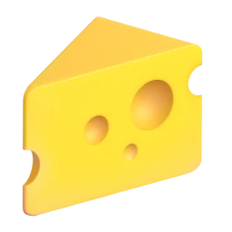
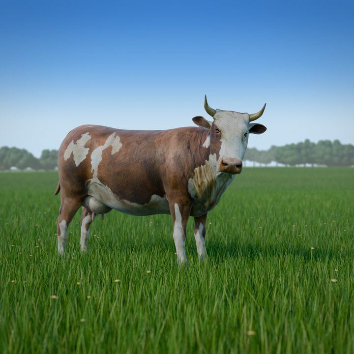

1
Sign up as a member.
Udder Milk is a private members' association. Sign up online with your name, phone and delivery address, and you're in.
Sign upA brown cow grazes in a sunny pasture, then lifts its head and looks at you.
The land of milkraw & honeylocal.
Raw A2/A2 dairy, 100% grass-fed meat and pastured eggs from small Pennsylvania farms. Delivered to your door 12–24 hours after milking.
Kathy's golden Guernsey milk, with a thick layer of cream on top.
Churned from grass-fed Jersey and Guernsey cream.
Pastel shells from Araucana, Welsummer and Marans hens.
So rich it sets thick like Greek yogurt, and naturally sweet.

Twenty handmade wheels, from gouda to tomme to blue.
From the Pennsylvania mountains, never heated past 115°F.
Walnut Run's slow-risen loaf, made with Jersey milk and pastured butter.
Frozen right after slaughter. Marinate it a day ahead.
We try to get milk to you 12 to 24 hours after milking. That's why some members get their order after 10pm. It's the freshest way we know.
Udder Milk is a private members' association. Sign up online with your name, phone and delivery address, and you're in.
Sign upYour delivery day and cut-off date are under the Delivery Day tab in your account. While an order says Open, you can still change it.
Browse the shopWe deliver from 11am to midnight. Put out an 11-quart cooler with ice and your cash, and we'll fill it. No card needed at checkout.
Delivery detailsFrom raw milk in five kinds to hand-painted papyrus art. Here's where most members start.

Guernsey milk is rare. So Kathy started her own herd.
Guernsey milk is golden from beta-carotene, naturally A2/A2, and rich in protein and butterfat. It's the only farm like it we know of on the East Coast, apart from one in Vermont.
Everything else comes from small family farms, mostly non-Amish now, plus a few Amish families. They have room to rotate their pastures, and they farm without sprays.
If a farmer's quality slips and they won't fix it, we find another farmer. That goes for the butter, too.
Whole rabbits, halal, about 3½ lb each. They go quickly.
Take a lookThe foie gras of the sea, sold by the half pound, alongside wild Alaskan king salmon.
Take a lookRoasts, steaks and ground beef from long-grazed cattle, frozen right after slaughter.
Take a lookSign up, and get raw, grass-fed dairy and good farm food at your door, 12–24 hours after milking.